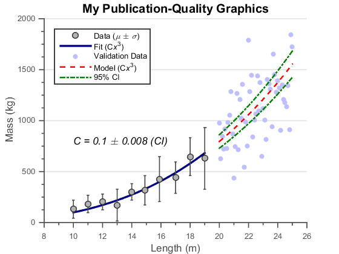

This is an example of how to customize a plot to make them publication quality in MATLAB®.
For more examples, go to MATLAB Plot Gallery
% Load data load data xfit yfit xdata_m ydata_m ydata_s xVdata yVdata xmodel ymodel ... ymodelL ymodelU c cint % Create basic plot figure hold on hFit = line(xfit , yfit); hE = errorbar(xdata_m, ydata_m, ydata_s); hData = line(xVdata, yVdata); hModel = line(xmodel, ymodel); hCI(1) = line(xmodel, ymodelL); hCI(2) = line(xmodel, ymodelU); % Adjust line properties (functional) set(hFit, 'Color', [0 0 .5]) set(hE, 'LineStyle', 'none', 'Marker', '.', 'Color', [.3 .3 .3]) set(hData, 'LineStyle', 'none', 'Marker', '.') set(hModel, 'LineStyle', '--', 'Color', 'r') set(hCI(1), 'LineStyle', '-.', 'Color', [0 .5 0]) set(hCI(2), 'LineStyle', '-.', 'Color', [0 .5 0]) % Adjust line properties (aesthetics) set(hFit, 'LineWidth', 2) set(hE, 'LineWidth', 1, 'Marker', 'o', 'MarkerSize', 6, ... 'MarkerEdgeColor', [.2 .2 .2], 'MarkerFaceColor' , [.7 .7 .7]) set(hData, 'Marker', 'o', 'MarkerSize', 5, ... 'MarkerEdgeColor', 'none', 'MarkerFaceColor', [.75 .75 1]) set(hModel, 'LineWidth', 1.5) set(hCI(1), 'LineWidth', 1.5) set(hCI(2), 'LineWidth', 1.5) % Add labels hTitle = title('My Publication-Quality Graphics'); hXLabel = xlabel('Length (m)'); hYLabel = ylabel('Mass (kg)'); % Add text hText = text(10, 800, ... sprintf('{\\itC = %0.1g \\pm %0.1g (CI)}', c, cint(2)-c)); % Add legend hLegend = legend([hE, hFit, hData, hModel, hCI(1)], ... 'Data ({\it\mu} \pm {\it\sigma})', 'Fit (C{\itx}^3)', ... 'Validation Data', 'Model (C{\itx}^3)', '95% CI', ... 'Location', 'NorthWest'); % Adjust font set(gca, 'FontName', 'Helvetica') set([hTitle, hXLabel, hYLabel, hText], 'FontName', 'AvantGarde') set([hLegend, gca], 'FontSize', 8) set([hXLabel, hYLabel, hText], 'FontSize', 10) set(hTitle, 'FontSize', 12, 'FontWeight' , 'bold') % Adjust axes properties set(gca, 'Box', 'off', 'TickDir', 'out', 'TickLength', [.02 .02], ... 'XMinorTick', 'on', 'YMinorTick', 'on', 'YGrid', 'on', ... 'XColor', [.3 .3 .3], 'YColor', [.3 .3 .3], 'YTick', 0:500:2500, ... 'LineWidth', 1)